Journal of Sir Primrose Maltby
3rd of Half Sowing, 2000
Testing testly with a test.
Oh neat this works!
I've elected to use the Eyomic Calendar Farmer's Count for dating my journal for the benefit of readers like you.
I'm sure they've stuck some grand introduction up there, but you know what? They've got a sanctimonious stick up their behinds. Have a proper introduction.
Hello, you! I'm Primrose Maltby, and I want to be Queen of the Pirates! But I wasn't born on the seas and I don't like robbing people so poking my nose where it dosn't belong and no one's poked their nose before is what I'm all about.
I've been sent to check out this old island. The robot folk call it Kentia, it's apparently haunted, I've got Ghost Touch on my gun, knife, and boots, and wouldn't you know it, I just finished the last of my chewing gum.
Excuse my verbosity, I've been at sea for 6 hours with little to do but look at my destination through my spyglass. Now there's a thought. Why don't we see if this thing can pass sketches?
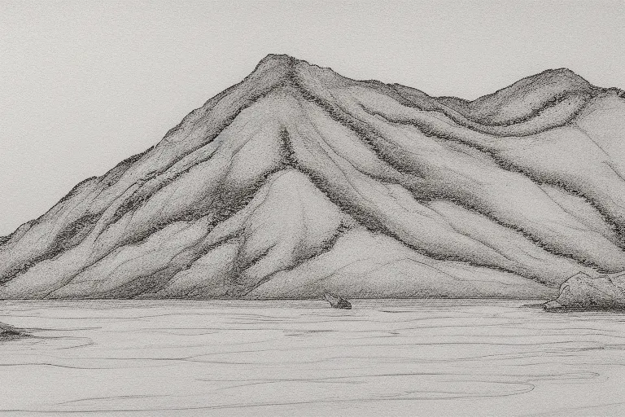
Looks like she can. Great! My journals are mostly sketches, if I'm being honest.
As for the isle, it's bigger than you'd think. It doesn't come across too well in my sketch but that's not a buoy floating in front of the island. It's a tower of some kind. I'd argue it was a light house, but none were ever built here according to the records. In all likelihood, it's an old watch tower for the fishing camp the Constructi tried to build out here once upon a time. From what I can see the thing took a pounding by the waves, then a flying elbow from a bigger wave. Thing's ancient and crumbling from time and inattention.
The dark lines you see in the crevices of the mountain there are forests. The rock is mostly bare. I'm assuming its simply too slick for dirt to cling onto given the local weather. You have very frequent storms in these parts. A trade wind enters the God Wall to the north, comes south, strikes it, and splashes back against this island and up the bay. I saw one last week. They're enough to bow the soil from an island, let me tell you.
I shudder to think of the effect on the weather should the Wall ever go down. Having lived in Eyom for a few months, I'm relatively certain Lord Irus wouldn't notice, or care. He's not the threat here. You wouldn't have civilization prospering in these lands if he was.
4th of Half Sowing, 2000
I've arrived at the island and set up a base camp. Took me a while to get situated. I was hunting for a spot where I could safely anchor my boat and be storm resistant. There's plenty of places that would do for that alone, but they all bear signs of wildlife. Signs like blood, fur, bits of hide. Predator signs. One does not make camp where the beast dines.
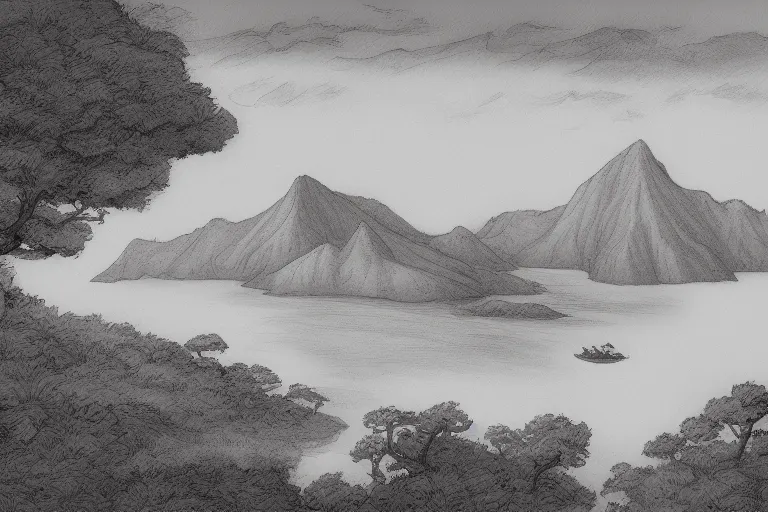
Lovely view, isn't it? Turns out there are bays suitable for making permanent settlements. This is overlooking one such bay. I have no idea why the fishing camp was placed outside of one. I walked over to the ruined tower last night. It certainly was a watch tower. About 200 years old, judging by the rust piles which were once canons. Exactly right for what I was told about this place.

I've gone ahead and sketched my campsite for you. Bigger tent than I normally use, but this is a long mission. I need some covered work space. There will be quite a bit of tedious documentation. Don't worry, I'll spare you the tedium.
Tomorrow I'll be checking out the woods around camp. Just get an idea of what kind of biome I'm dealing with. Conventional wisdom says things should be similar to the closest shore, but this is a jungle, not a swamp. It's not unheard of for seeds and citters to fail to make their way across this kind of gap, but it's unusual.
Worth checking out at the very least.
5th of Half Sowing, 2000
Here's a sketch of a native plant.
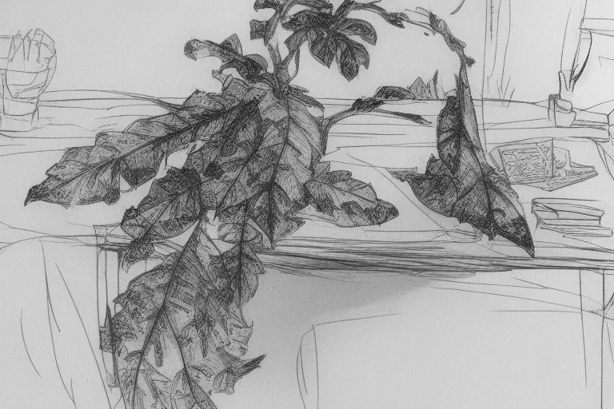
It matches nothing in any of my guide books, nor memory. I've got something of an affinity for plant species. If the Corpse confirms its unique, I've decided to name it Alderfern.
You can see its leaves, they have that distinct alder shape, but tile along stems like the fronds of a fern. What's extra interesting about this particular plant is it produces a small number of berries around the base of the plant. That's correct, the base.
Your typical plant will have its berries out on the edges, allowing them to drop far from the main plant and be eaten by herbivores to spread its seeds. This plant drops its berries right on top of itself. Seemingly not a very good strategy. Especially since it only makes a dozen or so berries.
Yes, yes. I'm aware that this plant cannot be a fern if it reproduces by anything other than spoor. It looks like a fern made of tree leaves. If Sir Talland got to name the Donotwipewiththis Bush as he did, I can name something after what it appears to be.
Back to the berries. The berries themselves are a bright yellow color, similar to safron. Quick analysis shows them to be safe to eat. At least in the short term. They have a flavor remarkably similar to a lemon cream pie. Its muted, and dull, like the last memory of the pie on your tongue after drinking some water, but it's there. I picked a few kilograms and set them to ferment. We'll see how they do as a wine.
6th of Half Sowing, 2000
A storm hit today. Came right out of nowhere too. There was no sign of a storm at all, not by eye, nor by divination. Standard procedure in the Corpse is to double check the day's weather with a casting of Thinriser's Lesser Forecast. The spell's not too powerful, and it's wrong on occasion. But it also can't detect storms which someone's conjured up. Not sure if this storm was natural or not. I've had worse natural storms, but this one came on real quick, and lasted from around noon till sunset.
My camp was safe enough, but this island is just as rocked by the wind and waves as I suspected. I could see small rocks moving as the waves hit them between the lightning flashes. I did my best to weather proof my camp during the storm. The trees broke the wind for me, so digging drainage trenches wasn't so bad.
I'm disappointed in my new shovel though. I'd heard the Sylvin M-23 Entrenching Tool was a legendary shovel. It dug slightly worse than the flat of my bowie knife. I find it odd the average Militaman wears the darn thing like a knight and their sword of office.
Regardless, the storm passed with only minimal damage to my boat, and a slight drenching of my supplies. I'm now weather fortified and should be more than ready for the next such storm.
There was one odd occurrence worth mentioning. It's easy for the eyes to play tricks on you during lightning storms. Plenty of shadows, the light exists for but a moment, et cetera, et cetera. Thing is, I swear I saw a humanoid form lurking in the trees above my camp. I checked, and there was no sign of anyone having been around aside from me... But if there was someone here, the storm would have vanished their trail in an instant. Let alone a whole day.
Before the image leaves my mind, here's a sketch of what my mind swears was looming in the canopy above my tent.
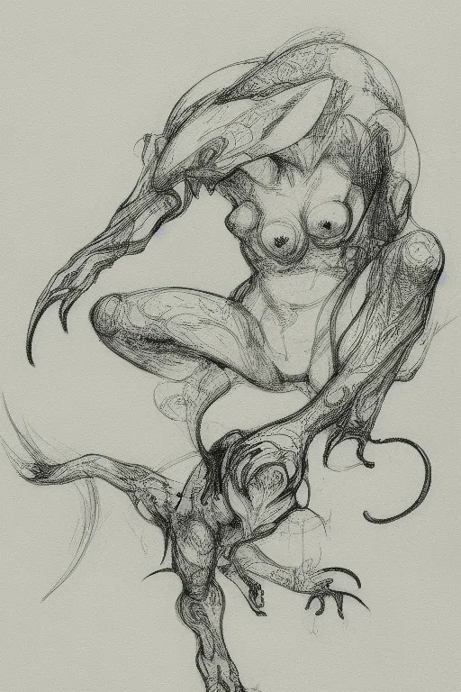
Yes, I'm pretty sure it had three breasts. I assure you that depiction is strictly scientific in nature. Well, okay, it's also a little awesome. Unfortunately, as I am on the clock, strictly scientific it shall remain.
7th of Half Sowing, 2000
Close call today. I knew this island had preditors, but not what kind. Well now I know, and while normally that's half the battle won right there, this time is different. Say hello to these bastards.
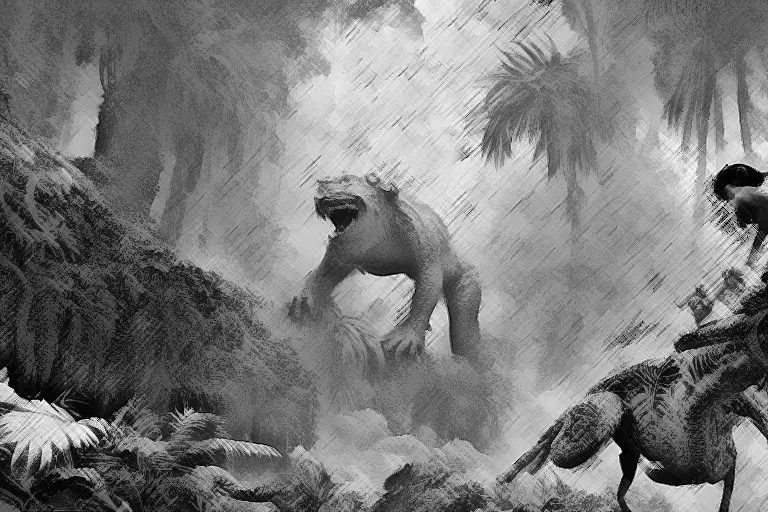
Excuse the poor copy. This pen is supposed to be able to recreate images taken with a camera, but as is plainly evident, it sucks at it.
Regardless, look at this bastard. It's what a small child would imaging a beast to be if said beast was created by a necromancer playing with the remains of a wild cat, monkey, and great shark. See those lumps on the head? Those are its eyes. The little black dot is its nose, I think. Its eyes are large jelly-like orbs. Look just like a dragon fly's. Everything else is that shark head and tough scales on the body of a wild cat, a fast one, with god damn monkey paws.
I'm glad those bastards are solidarity, because they can put up one hell of a fight. They also like to attack while a lady is in the middle of her morning pee. Lucky for me I always relieve myself with one leg out of my pants for just such an event.
The thing lunged at me, howling with a cry I can only describe as the noise a man dying of thirst makes if their manhood is caught in something, and took a bite out of the tree I was leaning against. No joke, there's a handspan missing from that wood. it's hardwood too. Takes a good five minutes with an axe to fell them.
This thing didn't just bite or snap either. It punched. The punches hurt. I'm on my second healing tincture and I think I'll need another one before my ribs go back to being convex rather than concave. Damn monster swung between lower hanging tree branches, like a Bo damned monkey on cocaine with a Bull's Strength chaser, biting and punching at my pantsless ass for a bit longer than I'd like to admit.
I was able to kill the thing, but not with my knife, enchanted and keen as she is. She skipped right off the beast's scales. It's not a matter of strength or precision. Its armor is mighty, friends. I know because of how many bullets it took to kill.
Fifteen.
The bastard ate an entire magazine. I'm not sporting some civilian weapon either. Syckle here is a Ironclad Arms 1982 Autorifle, chambered in .78 Anvil. She's built to stop a charging Bulette, and she's done that job well. Despite this thing being like a Bulette, perhaps even related, it shrugged off the hits. Until one went down its throat. That put a stop to it right quick, let me tell you.
I don't care what the Corpse says. I'm calling these navahlǐgwep. That's Wamzèian (The Constructi's language) for "Shark Ape". We call things what they are here.
I was going to start mapping the island today. Instead I'm going to break out the old reloading kit and make a few dozen AP rounds. Survival Tip: If you're ever in a backwoods shit hole with no way to get supplies, you can drill a small hole halfway through your bullet form the tip down. Cut a nail to length, pop that in there, and peen the bullet closed around the nail with the ball end of a ball peen hammer.
Easy AP rounds. Just never use them if you can use anything else.
9th of Half Sowing, 2000
Not much to report today. I finished scouting and mapping the area around my camp. Good news, the Shark Ape seems to not live around here. There's plenty of animals, and a few rather timid monstrous creatures, but no living tanks.
Brief aside, a Shark Ape's teeth are almost as hard as iron. I was able to use them to pierce the beast's scales, so I wound up using them for my AP rounds instead of nails.
Back on track, examination of the local area shows the local flora and fauna to indeed be partially related to the Mǐr Vǐdlojĭ Maquis. I was able to find specimens of the Brown Water Snake, Blue Racers, and Flamingos. The stream near camp had spotted bass, yellow perch, and gar, the seas appear to have basilosaurus, needlefish, and urchins. On the plant side, I have found significant populations of boysenberries, dicksonia (yes that's its real name), buchenavia capitata, and pisolithus.
Sorry for the scientific names, but if you don't use them with plants, every 3rd person will think you meant something entirely different.
We'll need to send a botany team here soon. While many of the plants are clearly from the mainland nearby, plenty appear to be either unique or from elsewhere. Elsewhere being quite distant. Assuming these plants are not native to the isle, we have a little botany mystery on our hands.
10th of Half Sowing, 2000
There's an ancient runestone circle about 4km from my camp. It's to the east, just on the other side of a rocky outcropping from my camp, sitting in the middle of a clearing in the jungle. I sketched it in the field, and will recreate the image as best I can here using the sketch as a reference.
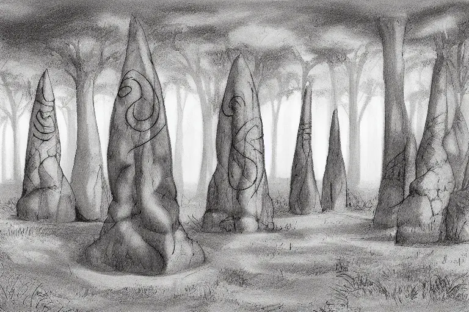
The stones are all conical, but appear to be weathered down rather than carved. I couldn't find any tool marks aside from those used to carve the designs into them. The glyphs (as I believe them to be) do not correspond to Zoman, which was my first guess. The biggest give away is the glyphs glowed ever so slightly red. A pleasant red, like the warm coals of a camp fire. Zomans did use glowing runework quite often, but as far as anyone knows they avoided the color red in their signage.
I made some rubbings of select glyphs and compared them to known Zoman writings. They are similar, but not quite correct. I believe this to be a first generation language related to Zoman. Much like Wamzèian, Menèian, and Zdaalish.
Perhaps more interesting than the glyphs themselves is the stone used for these monoliths. They are composed of slate, and are studded with fist sized chunks of jade and turquoise. This should be impossible without some form of rhyolitic volcanic rock present along with the slate. The implication that I see is the creators of these standing stones carefully cut cavities into the slate, then inserted the jade and turquoise before polishing the standing stones.
At least, I assume they were polished. Its clear they were weathered to shape, but the surface is too smooth for weathering to have been all that happened to these stones. Unless they've been here since the beginning of the Zoman empire. Which seems unlikely.
More exploration tomorrow. I have the lower quarter of the isle loosely explored. I'm not here to go over things with a fine tooth combe (yet). I'm only here for the land marks and general overview.
Pitty that. This isle is rather homey. Aside from the Shark Apes.
11th of Half Sowing, 2000
Good news: The AP rounds work.
Bad news: I found where the Shark Apes territory.
Its a lovely little glade of old growth trees in the center of the isle roughly 5.5km east by north east from my camp.
They live in packs.
Big packs.
I took down six before my magazine emptied. I didn't get a chance to reload. They are highly aggressive, faster than the first one I fought by far (it may have been sick), and I'd accidently put regular rounds into the magazine I'd thought was more AP rounds.
I'm currently writing this from a small cave in a rocky outcropping next to a waterfall about a klick west of the Shark Ape's den. This place isn't safe either.
It's never a good sign when an aggressive predator stops chacing you dead in its tracks, but when you've got one leg working and the other starting to fail, better the unknown than certain death.
I'm not sure if the thing I'm looking at floating over the river outside is interested in eating me or not. It's just there. Floating. Might as well sketch it while I wait for the tincture to put my leg back into running shape.
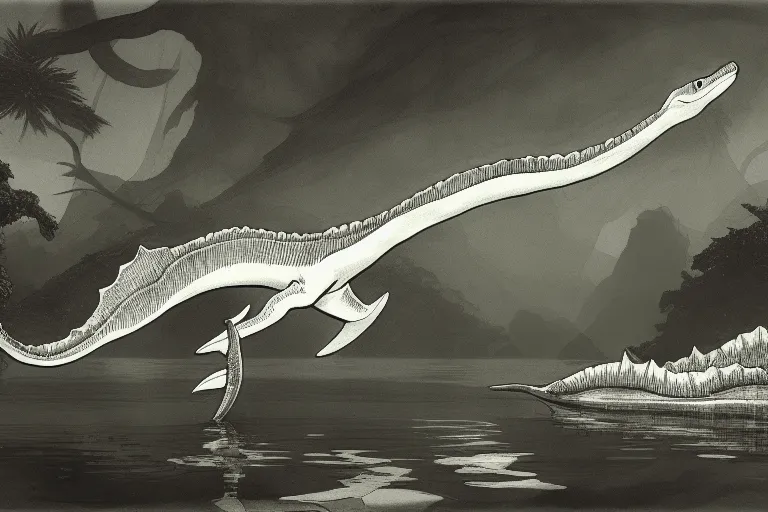
Look at this guy. He's like if a plesiosaur and an anaconda loved each other very very much, then their kid fell out of a tree, missed hitting the ground, and was thus doomed to eternally hover slightly above the ground.
He poked his head in here while I was sketching him, and before I was well enough to run. Turns out they're harmless. He just thibbited a bit, stole one of my pemmican bricks, then went back to floating over the water. So, clearly a carnivore, but either intelligent enough to not anger bipeds, or it dosn't like the smell of human meat.
Either way, I'm happy the noodly guy's here. He clearly eats the Shark Apes. You can see their skulls all over the river bank. Means the area over the river from their nest should be free of them.
There's a nice stream by my camp. I wonder if I can get one to nest there? Unfortunately for me, the bite taken out of my leg was worse than a simple tincture could fix. I'll be alright, I've got the proper potions to regenerate the lost tissues, but I'll be here for the night.
Let's hope the noodle isn't saving me for later.
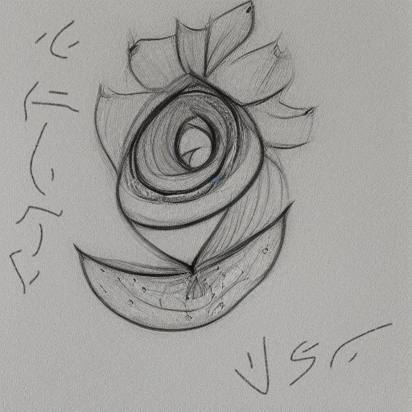
12th of Half Sowing, 2000
I want everyone to know I did not doodle a suspiciously... womanly flower. That was not me. Someone has gone through my belongings while I slept. I presume they meant me no harm as I am uninjured. However, most of my belongings are out of place, and one of my smaller knives is missing. Nor do I recognise the language in the doodle, though it appears to be Constructi derived.
I can only assume some of the Constructi who attempted to settle here managed to survive. How is a good question, given their power cells need replacement. At least I know I did see someone in the storm the other day. I'm going to continue my explorations. More later. I just needed to make sure my superiors know this doodle on the aethiary is not my doing.
It's been several hours since I awoke to discover my personal affects had been violated. I'm standing in a small meadow, and before me is a flower matching the doodle made in my journal this morning. A quick chemical and arcane analisis shows it's a potent curative, quite magical in nature. I can only assume the mystery visitor was offering me assistance. I did go to sleep before my leg had healed fully, and my pants are still torn and bloody.
Thank you mystery knife thief. Please return my good steak knife.
I'm being followed. I stopped to refill my cantine and caught a reflection over my shoulder. Knife thief is clearly used to watching game stop to draw things as they're staying still and mostly exposed. I don't think they know I can see their reflection in the water. It's small, blurry, and unclear, but I'm going to try to sketch it.
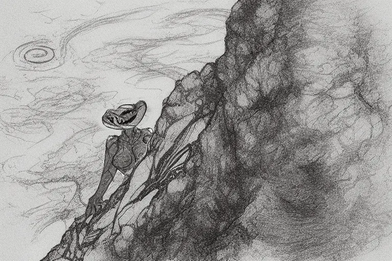
Not a particularly good illustration, but I suppose it will have to do for now. Not quite like what I saw in the storm... But then again neither moment has been very good for observing this person.
13th of Half Sowing, 2000
Still in the field, still being followed. I've come to the conclusion that Knife Thief dosn't know I know they're following me. I belive they think I wouldn't have noticed my kit having been rummaged through... And that I wouldn't notice one more picture in my journal. Which would make them quite stupid. Or at least think I am quite stupid.
I have no other explanation for them continuing to follow me and remain hidden, but observing me. I don't mind all that much. I'm here to know the unknowns. It's only fair to allow others the chance to learn about their own unknowns. Even if my intelligence feels insulted.
Of course, it's possible there are two or more of them. One could have supplied the curative doodle, and not told their companion that I am now aware of their presence. Perhaps they agreed not to let me know of their existence, and one couldn't stand by while someone lay injured.
In any case, they don't seem to be hostile. There's been plenty of chances to attack, and they have not. Nothing to do but continue mapping the isle.
I have made a major discovery. Three kilometers north from the cave is an ancient Zoman facility. Purpose unknown. Type known.
I don't mean to brag, but unlike the typical person I have memorized every type of Zoman structure known to the Imperium. It's part of the basic requirements for visiting Eyom. I genuinely believe this structure is not of any kind seen before, or at least, not recorded. If any of my fellow Explorers reading this live know what this facility is, please contact me. I set up a mail portal before I set out to map the isle.
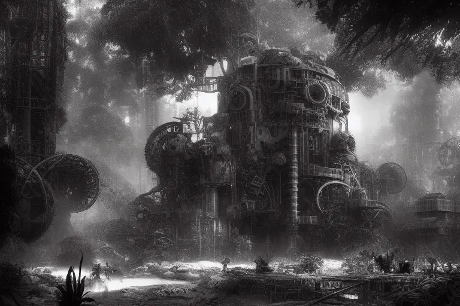
I took more time to draw the facility than I ordinarily would. It's important to document everything about these ruins. Its also important I don't touch anything without the proper tools. None of which are on my person.
I've debated going back to camp to fetch them, but it would be best to know the isle before exploring or even examining this facility. For all I know, entering it could anger the knife thief.
As an aside, I've determined they are uncomfortable in the light. There are indeed two of them. One seems to be wearing a mask of some variety. I believe, given the shimmer around the general eye area, that the mask has smoked glass within it. A sun-shade of sorts. The other lacks this mask, and I only see the both of them after the sun has set.
Interesting... But not as interesting as the Zoman ruin.
Look at the apertures on the top of the central structure. I couldn't draw them well, but they contain aperture-type doors. Three of them. Almost like an airlock. There appear to have once been attachment points around the entryways as well. Perhaps this was some sort of fluid refinery?
14th of Half Sowing, 2000
I thought today was going to be boring. There was little to do but fill in the middle of my map with whatever terrain lay before me. Kentia Isle isn't exactly your standard landmass. It's very clearly an ancient mountain top. There's hardly any flat areas and what little you find is nested into nooks, crannies, and valleys.
That's why exploration of the isle has gone so quickly. It's almost like walking the streets of a city. Except with Shark Apes and knife steeling good samaritans pointing you in the directions of curatives.
You can see the pathways from any high point, and I knew there was but one "road" for me to take today. I thought it simply dead ended in a box canyon, but the job is what it is. Every reasonably reachable place is to be charted and documented. So I went.
Here's what I found.
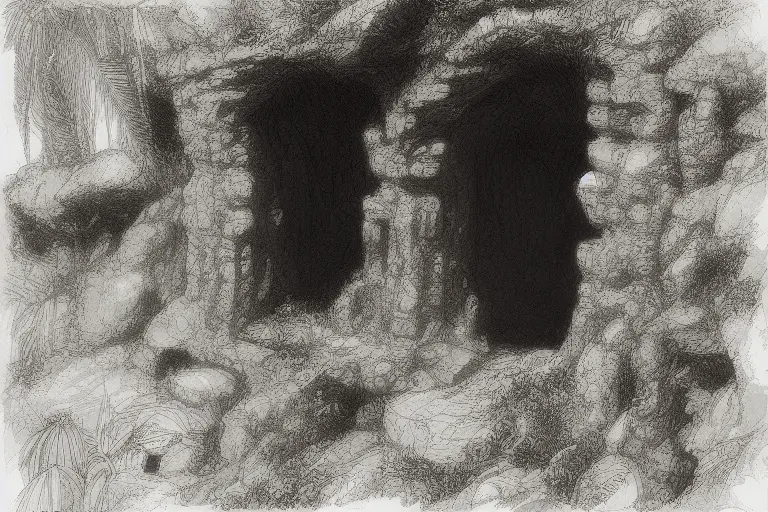
Might not look like much to the untrained eye, but I'll bet every Adventurer and Explorer out there is either excited or in need of new pants.
For the uninitiated, this is an old Zoman entrance into what we Imperials call the Onunder Burgsteall. That's Under City in this language, though the proper Sylvin name for it is the Dungeon Strata. It's a nice term for it, franky. It is, after all, a whole strata of the land in Eyom.
Not so much in the rest of Zo. It exists, and there are truly unthinkably massive tunnels linking its parts, but it's hardly the ubiquitous sheet of ancient mechanical ruins it is in Eyom.
The twin side by side entrances here suggest this was once a high traffic zone. We know little of the Strata's purpose. It appears to be a city, a shelter, and factories. If not for the many Zoman citadels carved into mountainsides it would be reasonable to assume they all lived underground. Perhaps these were used as shelters during the Irisian War (if so, they certainly didn't work). Perhaps some Zoman simply lived underground. We may never know.
What we do know is the place is crawling with all kinds of horrors and aberrations. Zoman science was potent, and their arcana even more so. I'm sure most of it was perfectly safe once upon a time, when a staff of Archmagi and Overphysists watched over and attended to each and every bubbling vat of reality bending technoarcana. That hasn't been the case for at least 6000 years.
At any rate, these twin passages lead to the strata. YOu can tell by their rectangular shape they once held doors. There's even some rust stained stone with bored holes for the bolts which once held the great doors in place. The doors are long gone, and if I was a betting woman (and I am, it's a serious problem), I'd wager the Shark Apes crawled out of there one day when they ran out of other science experiments to eat down below.
That or the Things in the Dark chased them out. If that's the case I can't blame them. My mentor said he killed a Thing once. It's why his legs are construct replacements. How's he know he killed it? He dosn't. He assumed the methylphosphonothiolate canister did the job. Me? I'm not so sure.
At any rate, this place is being marked down on the map as something for the army to get around to. I'd seal it off with an avalanche, but that's sort of the opposite of my job. There's a non zero chance the brass will want me to poke about in there. If that's the case, they'll have to ship me some steam armor, and three people.
Preferably three blond youths from a rural village some marauding warlord burnt down during the harvest festival. Call me super stishious, but I'm convinced those kind of people have more luck in their pinkie toe than any divine has in their whole mantle.
The route I can take tomorrow takes me through thick wood. Looks like a proper roofed forest. Here's hoping I don't encounter any more Shark Apes. I'm just getting used to my new rectus femoris.
15th of Half Sowing, 2000
Had a close call today. I found where Knife Thief and Night Owl live. They have a few friends, and they don't want people poking around their home.
They live in a nearly undetectable compound with buildings half-way built into the mountainside. It's located approximately six kilometers dead north from my camp, and three kilometers due west by south west from the Strata entrance, directly in the middle of the roofed forest I mentioned yesterday.
They hurtled a few spears my way as I approached. No idea who, I didn't see anyone. I can say for certain they didn't want to kill me, but did want to make it absolutely clear they wanted me nowhere near their home. Fair enough. Fair enough indeed.
Of course, you don't need to be close to something to draw it with your spyglass.
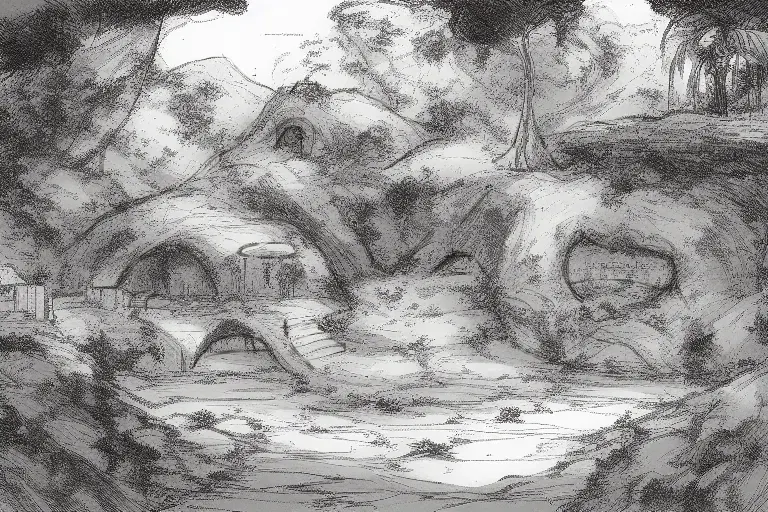
Whoeaver they are you can see they have a complex society. They make clearings, grade land, construct walls, stairs, and have a concept of arches. Of course, my theory about them being some surviving Constructi colonists is bunk now. This is nothing like how the machine folk live. Sure, the spears thrown at me may have been well made creations of milled steel blades with, if I'm not mistaken, a turned aluminum shaft tapering for maximal aero-efficiency, but the COnstructi wouldn't be caught dead living in earthen structures. Not even nice ones like these.
The sections of building you can see in my sketch which emerge from the hillside are made from what appears to be stabilized earth with a sort of plaster coating. It's clearly not too longlasting, as I could see damage from the storm to the structures while I spied on them from afar.
I was able to catch a glance of some repair work going on in the deep shadows of a section of the village up the hill a ways from where I chose to place my sketch. The workmen wore thick robes, with the hoods up. Despite the sweltering noon heat in the jungle. If not for Knife Thief following me day in and day out, I would assume given their nocturnal behavior and manner of dress that they were albinos. However, even albinos would discard those robes in the shade given I'm sweating so much my poor deodorizing broach shorted out two hours ago.
The heat today is simply absurd.
Refocusing on our robed friends, given the lack of decoration, extremely well manufactured weapons, manner of dress, and apparent duty-based job assignments, given my tail, I believe I am dealing with some kind of monastic order. I've labeled this village on my map as a monastery for the time being.
Since they do not wish me to enter their territory, I will give them a wide birth for the moment. But, a job is a job. I'll have to return once I've earned their trust.
16th of Half Sowing, 2000
There are few places an Imperial Explorer will not tread. Today, I found one of them.
The northern edge of Kentia Isle is dominated by a genuinely enchanted glade. I documented as much of it as I could before I came upon, well...
The glade is centered around an ancient pool. Artificial in origin. As I approched the pool a frigid gust of wind blew through the flowers surrounding the pool, coating them in a ryme of hoarfrost. I looked north, where the gust appeared to be coming from, but the trees didn't move. Only the clearing felt the icy touch of this unnatural wind. What I did catch sight of was the moon, which was rising just above the tree tops as a pale circle of dim yellow light.
The full moon is not due till the 24th. It should have been a waxing quarter. It was full. Its ghost-gold rays slid over the glade like oil paint, making everything look dead as mid-winter despite the leaves remaining present and green. Then, just as I expected to be attacked by an Ice Linnorm, the moonlight touched the pool and colessed into ethereal white glowing unicorn-shaped mass of light.

There is not enough gold, glory, or honor in all of Zo to make me disturb or disrupt whatever this creature is, and whatever it is doing. I have drawn it to show its existence, and to document the pool it calls home, or its own. It hardly matters.
The creature emits an aura of peace, calm, and tranquility. Its mere presence healed the last tinges of irritation in my leg, and I feel better than I have in years. I feel at peace, like my life has purpose and meaning. I feel good in every way I can feel good.
This means one of two things. The nieve and optimistic of the two ways would lead you to believe the creature is either a minor god, or a servent of a god. In either case, it is a creature of goodness incarnate. A bastion of all that we yearn for.
In which case, the creature should not be disturbed or interfered with. Precious few such things exist in this world.
Or, alternatively, it could be a honey pot. A perfectly attractive dish to draw prey in close enough to strike. Most people wouldn't think such a thing would be possible, but I have the synthetic arm and leg to prove it.
I lost them to a similar creature which turned out to be luring pray back when I was learning from my mentor. He pulled me out of the things jaws just in time.
Given that I don't feel any traumatic memories, nor sense of dread or unease from what I just encountered, I'm leaning towards the second of those options. In either case, the creature is best left alone. If it is a dangerous monster, the enchantments of such beasts are so strong only the strongest of minds can resist them.
I will not fight it. I will not harm it. Good or bad, the northern coast of the isle is off-limits for Sir Primrose. If you come here yourself one day, keep away.
16th of Half Sowing, 2000
I spent the day hiking back to camp. The walk isn't all that long, but I took my time to stop and finish updating the map from elevated points. I enjoy the process of using survey equipment to finish up maps. At any rate, the coastline is as accurate as can be reasonably made by one lady with her tools and a pen. I'm copying it into my journal so you can see it for yourself.

Nothing much else to share for today. I'll likely rest tomorrow. It's nice to have a bed again after a week of sleeping on rocks.
17th of Half Sowing, 2000
Ha ha. Rest.
Oh boy. Where to begin?
I woke up to the sound of a gale force wind, the feeling of my tent wall smaking me in the face, and the vibrating feeling of an unthinkable amount of rain coming down at what I presume is correctly called "a divine's wrath". I could see the rain denting in my tent. Even more than the wind was. It was horrifying.
The first storm I'd sat through on this isle was absolutely natural. This was the magical storm of hatred. No doubt about it. I'd never sat through anything more than a conjured rain before. Now I have. Trust me, once you do you wont mistake a sudden or serious storm from a storm created to kill.
My camp's trenchwork couldn't cope with the flood waters. I was standing in three inches of water within seconds. The flooding stopped there, mostly because the cliff behind my camp turned into a waterfall. Lucky I chose to hammer my tent stakes into boulders after the first storm. I also moved my supplies a few inches off the ground too.
While I wasn't likely to loose anything to water, the wind was bad. Real bad. It pushed through all six layers of oilcloth in the tent walls (It's an artic tent. I use it everywhere since it's enchanted to keep the incide comfortable.). I was all set to hunker down in my tent and ride the storm out... Then the lightning started.
It fell in sheets. Moving, progressing, sheets. As if a platoon of battlemages were sweeping the enemy lines. I've never seen anything like that before. I get what veterans mean about arcane bombardment now.
An aside to all who have served; I apologize for quietly scoffing at how scarry some sheet lightning could be. I know now.
I abandoned my tent, presuming the worst, and made for a nearby cave I'd found the other day. I'd made it half way before being blown over as the wind picked up. I was slammed and dragged across the ground until I was tossed into my own tent. A hundred meters. Just slid along like a child playing with their doll.
Goodness knows how I didn't break anything, but I made it through with only a few scrapes, bruises, and serious puncture wounds. I picked myself up to get back into the tent and treat myself before trying again, and that's when I saw it.
The beach below my camp, where the impromptu river now drained, is part of a large bay. That kept it sheltered form the winds and tides thanks to being part of a bay. Infact, the water had pulled outwards a great deal. Not enough to indicate a tsunami, thank Bo. But a lot.
Enough to serve as a battleground.
The wind drowned everything out, but I could see dozens of humanoid figures armed with clearly enchanted blades (That or they'd been recently heated in a forge to cherry red.) on the beach, locked in combat with some very much not humanoid figures. I have no idea what those things were. Part crab, part squid. Didn't matter. They were here, they were killing people, and based on the spell-lines orbiting a few of them, they were in command of the storm.
There's a saying amongst the Imperials, one with an equivalent in every culture. When the ocean attacks, everyone is family.
I grabbed Syckle, took as best a shooter's stance as I could while leaning against a tree to fight off the wind. I put shot after shot into the crab monsters. Three magazines. It didn't appear to do anything.
Truth be told, I don't know if I hit anything. Syckle fires big bullets, plenty of mass, but in winds that can move a woman like a leaf, that only does so much. I did see one round hit its target. A splash of sparks on chitinous armored hide. No penetration.
The same can't be said of the enemy. Their claws bit into the defender's flesh. No doubt about it. Every few dozen stikes one of the humanoids fell. I wasn't making a difference.
I had to.
I went back to the tent and took Intervention out of my chest. She's the expensive one of my three ladies. For my fellow gun bunnies, Intervention is a tri-barrel Anderson 900 chambered in the traditional 78-800 Falcon, and she’s meant for the 134 mm shells, not the standard 107 mms. For everyone else, she’s 18 gold crowns a boom.
Don’t bother writing in, quartermaster. I’m not apologizing. Be happy I didn’t use Suzen. I almost took her out of the locker.
Now that a particular paper pushing panzy’s pants have been darkened by the looming threat of Suzen, lets return to the battle.
I got back into position with Intervention and opened fire again. Damn gun cracked my shoulder on the first shot. 350 grains is about all my arm can handle. Shame I can't shoot well with my flesh and blood arm. It's harder to dislocate.
After popping my shoulder back in place and blinking my eyes clear from the tracer trail (Gunsmiths, phosphors are bright. Optics need a fold-down piece of smoked glass.) I pulled the stupid gun tighter to my shoulder, took my second shot, and this time the enemy got hurt. Blew a hole clean through the crab monster. Big enough to ram my fist through, if I do say so myself.
It didn't die. I didn’t like that.
I fired 24 shells that evening. All of them I had, save one (Never get rid of the last anti-dragon round, friends). Did my best to hit joints. Made one drop a humanoid it had picked up by blowing its arm clean off. That made a difference. Another difference I managed to make was taking down their storm mages. These particular crab-squids need their claws to gesture like our mages need their hands. Keep that in mind, everyone.
Fortuantly for my fellow land-dwellers, the crab monsters fell back when their mages went down and the storm broke. It was nice. Very nice. I got to go back into my tent, chug a healing potion, pass out from blood loss, and wake up to write this journal entry. I can't get back to sleep either, so I'll draw the battle as I can remember it.
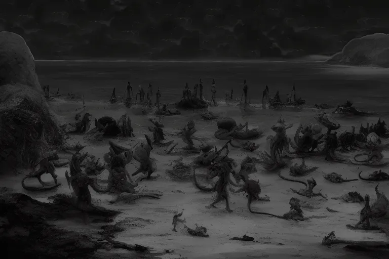
18th of Half Sowing, 2000
I had a lot of clean up around the camp to do after last night's storm. Ropes needed redone, a few stakes needed re-sticking, a lot of things needed to be dried out in the sun, and worst of all, a lot of my rations got soaked despite my best efforts. So I had to fo a bit of foraging and hunting.
I decided to head to the beach where the fight took place. That much lightning near water usually means some fish died, and the tide would have washed them in. Easy food.
I found plenty of fish. Filled a sack, gutted and flitted a few hundred fish on the shore (Why make a mess when the ocean is right there?), and filled the sack back up. Plenty for dinner, salting, and making jerky. More then enough to make up for losses. About two months of food. More than I was likly to be here, or at least be alone here.
Thing is, a woman can't live on fish alone. Anyone who says otherwise is selling fish. So I decided to look for some oysters. I'm not the biggest fan of shellfish, but hey, any port in a storm.
That's when I found her. Jammed up between two rocks, head barely out of the water, and slipping rapidly into the great beyond.
I have no way to tell if she's Knife Thief, Night Owl, or some other person who was fighting last night, but it dosn't matter. I pulled her out of the rocks and back to my camp to tend too. She's been unconscious for hours, and I fear the worst.
Let's start with what she is. I thought she was a Rattu at first. She's a large rodent-shaped beastfolk, similar to the Rattu, but very different. Much larger legs, furred and tufted tail rather than bare flesh, oh and rather than simply appearing to be a humanoid rat, my patient is best described as an amalgamated hybrid of rat and insect the likes of which aught not come from this world.
You'd think such a thing would be frightening, yet... This isn't the case. She has six eyes, four tiny ones located next two two large ones, each covered in a ruby-like lense. Six ears, two huge ones where you'd expect a beast folk's ears to be, and then four more in a line below them, with each new pair decreasing in size. I thought her ears were simply large triangles at first, but no. THey move independently, like the eyes of a chameleon.
She's almost entirely conventional mammalian aside form the above. Barring small insect-leg like grasping claws on her abdomen. Four of them. They seem to instinctively hook into ad grab things. Especially my hands any time I tend to her abdominal cuts.
You'd think such a creature would be terrifying, yet... No. There's a grace and beauty to her form. It flows as a harmonious whole, and most interesting of all you can tell this is a person, not a monster.
Even the grasping of her claws is less a beast's flailings, and more akin to a babe taking hold of her mother's finger while sleeping.
The crabs, on the other hand, are clearly monsters. I found a few of their corpses too. You can see the Deep's influence in every part of their remains. INcluding the claw tip I dug out of my patient's right lung.
She got grabbed, and shredded. Punctured lung, cracked rib, shattered arm, fractured skull (found that one thanks to the blood coating her hair refusing to wash out. She clots very fast, but some of her wounds rip open as she moves. Others as she breaths.). Those are the simple wounds. There's also a Class III traumatic laceration of the abdominal wall, starting at the linea alba, going through the right internal oblique, and into the splenic flexure. There is potentially a hole within the adjacent duodenum as well, though I cannot be certain as I lack sufficient surgical retactors to keep the wound spread for examination.
If you understand what I just said, for the love of your gods, write my mail portal with detailed instructions on treating this type of wound. I am not a surgeon. I merely minored in hominid anatomy.
For the rest of you: Rat-bug Lady got gutted by a crab monster.
Its times like these I wish Imperial Explorer training included a course on curative potions. The normal variety for normal people. We build up an immunity to certain toxic byproducts resulting from fast-brew potions during training. Byproducts that will kill people who use our potions if they are not resistant, or better yet, immune. Nothing I have will help her. Unless it's clear she's in need of one final mercy.
I've tended the wounds as best I can, and I was able to force her to drink. Not much, she put up an unconscious survival struggle after about a liter. So I stopped. Still, she got fresh water. She's sewn up as best I can. I put some anti-infection cream on her wounds. Set the arm.
There's little more I can do, so I may as well sketch her as I keep an eye on her breathing. For science at the least. For her next of kin at worst. At least they'll know someone tried to help.
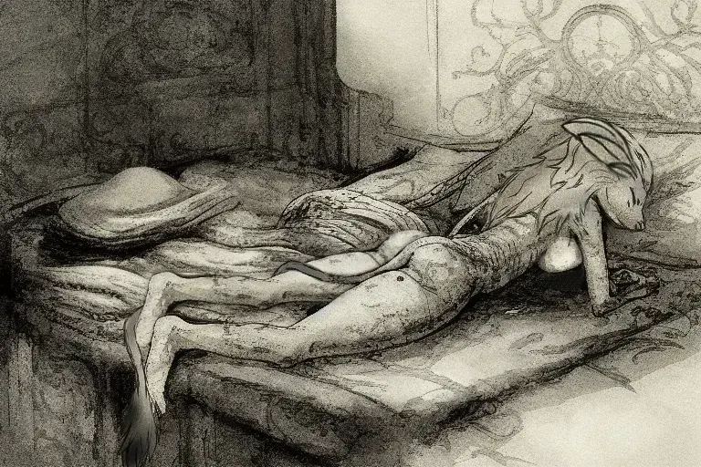
It's not the best sketch, but she keeps pushing off her blankets, hiding her face, and I'd like to preserve some of her modesty.
Assuming any of this woman's people come looking for her, I have gone to fetch some of the flowers illustrated on page 8. I do not recommend this woman be moved. Feel free to use my tent to treat her, should you have the means.
She's stable at the moment. Now's my chance.
19th of Half Sowing, 2000
Readers, we've had a stroke of luck. I say we because I got back to my tent and a mail portal with a blown resonator from getting bombarded with medical advice. Some of which was helpful. Thank you.
Said stroke of luck happened while coming back from picking some of the cure flowers. I gathered around two liters, intending to grind and press them to make a crude salve. While less useful than a potion by leaps and bounds such concoctions tend to be partially effective.
The expedient route to the flower patch from my camp happens to be different from the expedient route from the patch to my camp. There's a cliff and dowards slopes on one path, which makes the going faster camp to patch. I'd say the cliff is about three stories tall and it overhangs its base a good deal. Mabey twenty eight degrees. The sort of thing you can't climb at a reasonable speed.
I can drop down the cliff by hanging off it without difficulty or undo pain, but scaling it in under half an hour.is out of the question. This makes the physically longer route which avoids the cliff the swifter route coming back. THis has been a long winded way of saying I ran past the standing stones on my way back. I tend to get rambly when I'm nervous. In both tongue and pen.
The standing stones were occupied when I arrived. A group of my patient's people (Clad in the same thick dark near-black brown robes as when I'd last encountered them.) had gathered amongst the stones and while I couldn't tell what they were doing in the moment, I knew what I had to do. Something I personally loath with every fiber of my being.
I took a Draught of Tongues from my bag and attempted to pour it straight down my throat so I could talk to them, and not taste any of that rubbish.
An aside: My concoctions are not fun potions. They're bare bones field brewable distillates designed for pure function. They work. Bairly. There are no notes of honey and juniper in my Draught of Tongues like there are in the vials they sell to you when you take a vacation to some distant island paradise. Mine is a sparkling beige fluid which smells like maple syrup but tastes of raw sewage someone tried to salvage by adding spoiled vinegar, and has the texture of a brick.
I hate them so much I can't fully articulate how much I dispise that findish brew. Ironic, isn't it?
The rat-like folk were alerted to my presence by my distressed gagging and sputtering as I poured the entire thing across my tongue (because of course that's what happened). My presence upset them, and I didn't catch why because, well, potions don't always work instantly. Sometimes it takes a couple of moments. All I know is several of them started pointing spears in my direction, so I held my hands up defensively.
I still had the bottle in my hand, and one of them recognised it. Infact, the first thing I understood was "What is in that bottle?"
I told them it was empty and had been a potion to allow me to understand and speak their language for a short time, then quickly apologize for interrupting their business.
They informed me they were burying a spiritual leader who had died in the storm's battle. I offered my condolences, apologize again for the interruption, then mentioned my pacient.
Whatever else is true of these people, their culture absolutely values all of its members. While most of the group remained to continue the funeral rights, three detached themselves from the group to accompany me back to camp. I was curious as to why they had taken healing supplies to a burial, and took the opportunity to learn what I could while I could speak with them.
These people call themselves, well... People. They don't have a word for their species/race/people. I suppose their langauge's word for people will have to be their name. Unfortunately, I don't know what word that is. Isn't Tongues a wonderful spell?
As for the group I had encountered, they call themselves the Blinded Gardeners. I'm sure the proper name is more elegant. Again, Tongues. Literal translation is not good for learning the nuances of a culture. These People are subterranean, and well adapted to their environment. Daylight is quite painful for them to experience, but naturally many plants do not grow underground. The Blinded Gardners are an apostolic order of monks which tend to gardens for medicinal plants and concoct various curatives, which they provide as needed.
It came out in passing that the order's members are, presently, all female. I asked if they meant a nunnery rather than monastery and explained my translation potion's limitations. However, this time, the potion was not at fault. The People's language lacks gender entirely. There are ways to refer to things that move, things that do not, and people. Nothing about males or females, men or women.
This is exactly why Tongues is the worst translation spell for anything more complicated than "Where is the bar?" and "I would like the stew please."
I also leaned a little of their burial practices. There's more to the Blinded Gardeners than being apothecaries. There's religious beliefs and spiritual practices they seek to prefect, refine, and understand. A part of this involves the erecting of the standing stones. Each was crafted long long ago, and they are set into place when one of their leaders dies. The stones are enchanted and bound to the dead's remains, preserving the dead's mind and soul in a fashion similar to a litch, though without physical form. In essence, the runestones are transceivers and receptacles for their order's spiritual knowledge.
Unfortunately for me, my tincture wore off just as I got to camp. I was able to explain I had provided some help with the battle, but not how before it expired. I always brew Draught of Tongues with extended duration (so I have to drink less of them), but the hour long trek was still an hour long. I also didn't have a second dose on hand, nor did I want to occupy my time or equipment. The three healers with me may have need of both and frankly you don't need to speak a doctor's language to understand "hold this tool for me".
From what I could tell, the healers were both displeased and impressed with my crude medical work. They quickly removed the stitches I had done to access the deep recesses of her abdominal wound and begun their ministrations.
While their tools were simple and primitive, their medicines looked and smelled to be quite advanced. Explorers develop a nose for that kind of thing during training. Knowing the purity of an alchemical or chemical compound is key to many fast brewing techniques. I can say with certainty one of the topical agents they applied was a gelified oil containing a nearly pure mixture of plerixafor octahydrochloride and tacrolimus.
Individually, these constitute a drug used to treat (Well... alleviate) many kinds of withering growth, and a simple immunosuppressive mostly used to ensure a serious fever wont kill its victim. Entirely mundane medications, which are both quite modern feats of chemistry and require sophisticated knowledge to produce. Even more interestingly it was only recently discovered that when used together they accelerate wound healing nearly 25% without any magical effect.
Such non-magical healing is more valuable than gold, given most spellcraft heals by accelerating the natural processes. Sure enough after applying the mundane, the healers tackled the rest of the wound with topical alchemical solutions, and closed the wound with a wand. I'm nto sure what spell the wand cast. It was low power and very precise in its targeting. Left very little aura to read.
Once my patient had been treated (and I successfully mimed to the three healers that I had no more potion after they mimed drinking to me), we developed a crude means of communicating by refining our mimicry.
I was instructed not to move my, well, our patient, to keep her hydrated, and that she could be unconscious for several days. I think, but am not certain, that the crab monsters have poisons and the rat-like woman is presently fighting its effects in addition to her serious injuries. I also believe this is why they did not apply stronger arcane healing.
What I am more clear on is this individual is not part of the Blinded Gardener's order, but rather a guest who had come to visit their sibling. Or possibly mother? Familymember. We'll got with family member. I am to expect their arrival soon, as there is still a good chance our patient will not make it.
I suppose I should brew a few more Draughts of Tongues for the near future... So how about I postpone licking the bottom of an oily sewer by drawing what I can remember of the monk's burial?
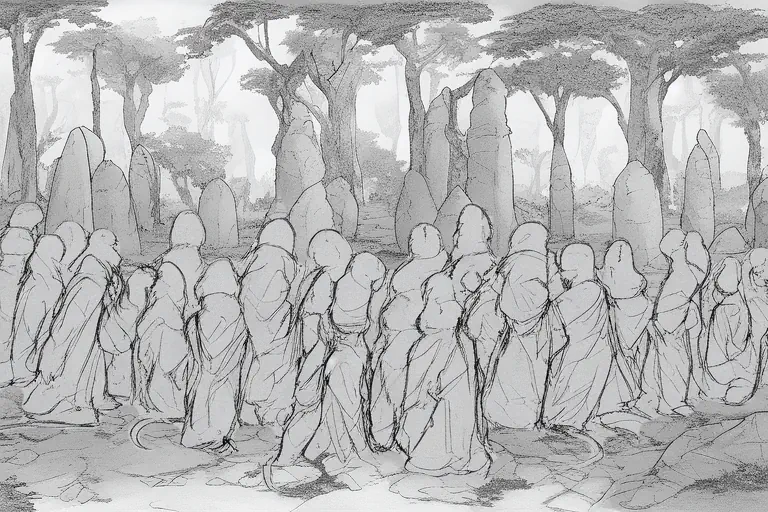
Damn it all. Now I have to brew more potion of ick.
20th of Half Sowing, 2000